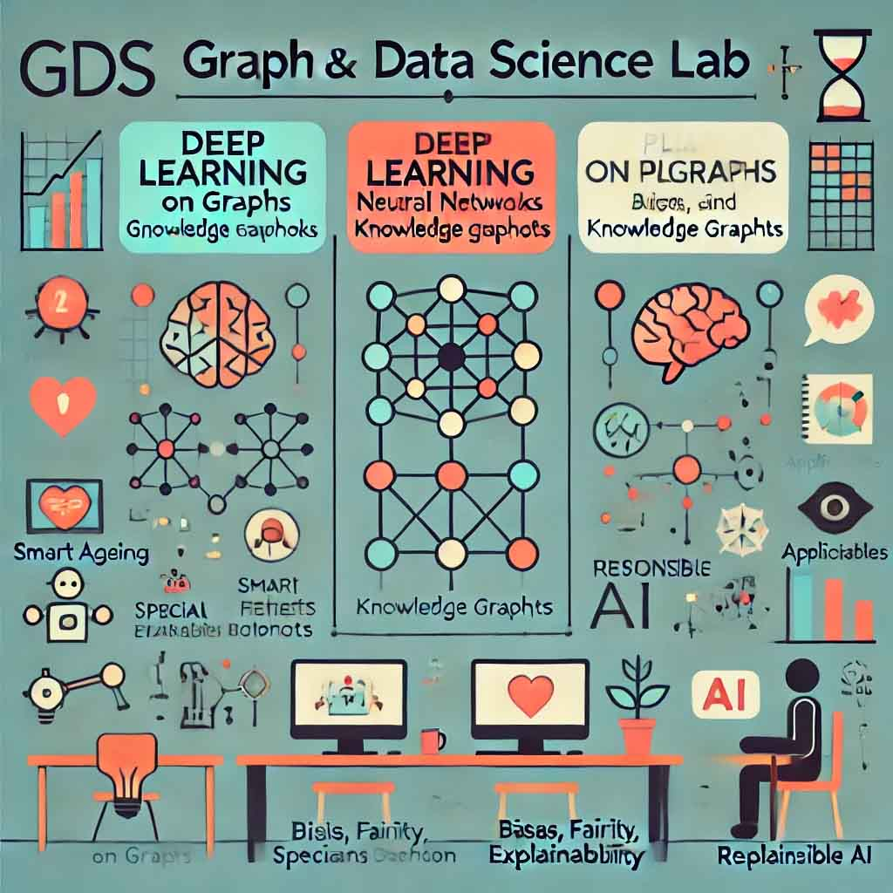

|
Jisheng Qin
Biography
I received my Ph.D degree from Hohai University in 2023. I am a lecturer in Institute of Computer Engineering and Information Technology, Chuzou University.
Jisheng leads the Graph and Data Science (GDS) lab, which researches graph machine learning, focusing on deep learning for graphs, graph-based models, and public interest data science. Their work applies to smart aging, service robotics, and education for children with special needs.
Research Interests
|
Graph Neural Network; Large Language Models; Computer Human Interaction
|

|
Recent News
Preprints
2024
Modeling Heterogeneity with Flexible and Semantic Aligned Graph Neural Networks.
Wantong Sui, Zijie Liu, Shenghui Zhao and Jisheng Qin*.
2024 International Applied Computational Electromagnetics Society Symposium (ACES-China)
Modeling Heterogeneity with Flexible and Semantic Aligned Graph Neural Networks.
Wantong Sui, Zijie Liu, Shenghui Zhao and Jisheng Qin*.
2024 International Applied Computational Electromagnetics Society Symposium (ACES-China)
Efficient Group-Aware Graph Neural Network for Air Quality Forecasting in Small-scale Spaces.
Jisheng Qin, Zijie Liu, Wantong Sui and Shenghui Zhao.
2024 International Applied Computational Electromagnetics Society Symposium (ACES-China)
2023 and before
Context-sensitive graph representation learning.
Jisheng Qin, Xiaoqin Zeng, and Yang Zou.
International Journal of Machine Learning and Cybernetics. 2023, 14(6): 2193-2203.
Structural reinforcement-based graph convolutional networks.
Jisheng Qin, Qianqian Wang, and Tao Tao.
Connection Science. 2022, 34(1): 2807-2821.
Multi-Semantic Alignment Graph Convolutional Network.
Jisheng Qin, Xiaoqin Zeng, and Yang Zou.
Connection Science. 2022, 34(1): 2313-2331.
Feature recommendation strategy for graph convolutional network.
Jisheng Qin, Xiaoqin Zeng, and Yang Zou.
Connection Science. 2022, 34(1): 1697-1718.
E-GCN: graph convolution with estimated labels.
Jisheng Qin, Shengli Wu, and E Tang.
Applied Intelligence. 2021, 51: 5007-5015.
|
{kind=link}
{kind=link}